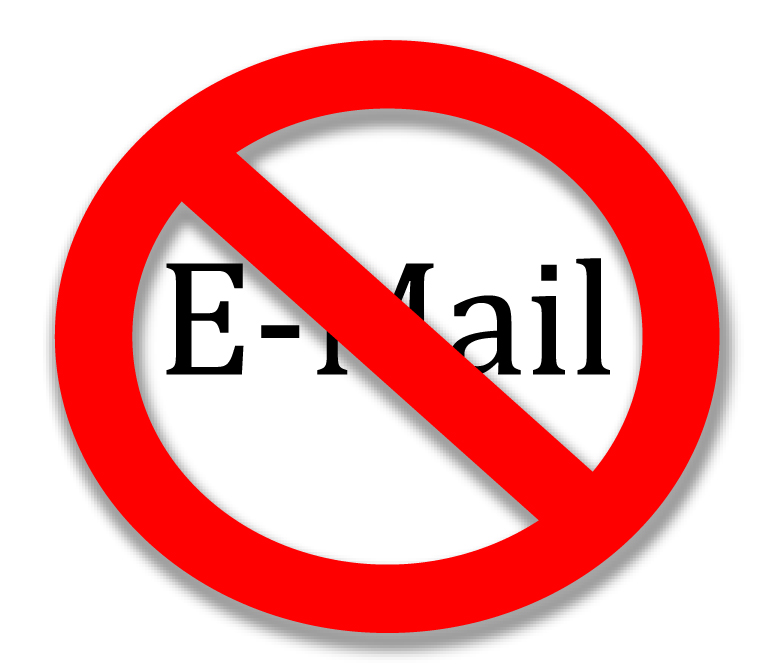

- Omni Adams
- @omnicolor
- http://omni-spot.blogspot.com
- omni@digitaldarkness.com
- https://joind.in/8200
- 1st, a little about me
- my name is
- find me on the twitter
- check out my blog
- feel free to email me
- This slide will be repeated at the end of this session
- And I will put the slides up somewhere as well
- a few things about this talk
- I try to be funny, it's okay to laugh
- If you're easily offended
- Feel free to ask questions
- Don't be scared by the number in the lower right
- First off, what is a git hook?
- No, we're not talking about pirates
- I assume you're all using git
- This talk might be slightly useful if you use Subversion
- It does have some of the same concepts
- But everything will be done slightly differently
- And will probably use different terminology
- So what do → git hooks

- do here?
- That's really up to your imagination
- I'm going to show you a few examples
- Hopefully that inspires you to create your own
- If you were really feeling crazy you could create a CI
- but a better CI: it could reject things that would break it
- Git hooks can act as a gatekeeper
- Inspecting your code ahead of time
- and bring down ancient Sumerian gods of destruction
- if the code isn't good enough
- Or after the fact it can hunt you down and... uhhh → politely

- let you know that you did something wrong
- it can send out emails
- or publish reports
- or change build indicators
- Git hooks can even → change history

- ... change history
- seriously though, hooks are very powerful
Clone
Add
Commit
Post-commit
Pre-commit
Prepare-commit-message
Commit-msg
Push
Pull
Work
Receive
Pre-receive
Post-receive
- There's a bunch of different places you can add hooks
- Here's a diagram of common actions in git
- along with the hooks for each step
- The white box is where you do your work
- Yellowish boxen are git commands that you execute on locally
- Gray boxen happen on the server
- Finally, bright yellow boxen are where the git hooks happen
- Git hooks on the left of the action happen before it
- things on the right happen after it
- And update is a weird case

- A quick note
- git was written by and for the Linux Kernel developers
- their workflow involves lots of patches via email
- Most of us don't develop this way, we use a central git server
- like github, or whatever you've got set up at work
- There are 3 hooks associated with this
- applyprepatch-msg, pre-applypatch, and post-applypatch
- I'm going to ignore them since the PHP community doesn't use them
- First I'm going to run quickly through the available hooks
- I'll give a high-level overview of each
- and what you might want use them for
- Then we'll get into how to actually write the hooks
Clone
Add
Commit
Post-commit
Pre-commit
Prepare-commit-message
Commit-msg
Push
Pull
Work
Receive
Pre-receive
Post-receive
- Let's start at the left
- How many of y'all use rebase?
- Rebase is a bit like magic and is really powerful
- But with great power → comes great
- comes great ... responsibility
- If you push your changes to a remote
- then rebase and push again
- very bad things can happen
- To keep you from killing Uncle Ben
- you can use a pre-rebase hook to stop you
Clone
Add
Commit
Post-commit
Pre-commit
Prepare-commit-message
Commit-msg
Push
Pull
Work
Receive
Pre-receive
Post-receive
- Next up is the post-checkout hook
- Any of y'all use lots of branches
- and frequently switch between them?
- post-checkout lets you reboot your → universe

- For example, if you have config files that aren't checked in
- and are different for different branches
- the post-checkout hook can move config files around
- Or if you use compiled JS or CSS, you can immediately recompile
Clone
Add
Commit
Post-commit
Pre-commit
Prepare-commit-message
Commit-msg
Push
Pull
Work
Receive
Pre-receive
Post-receive
- The post-merge hook gets run after a successful merge
- And by successful I mean, no errors
- That doesn't mean the code itself is good
- Especially if you have junior → developers

- developers ... on your team
- After all, git won't complain about leaving the conflict in
- You can git pull and see there's a conflict
- then without editing the file git add and commit it
- And yes, I've had a teammate do that
- So you might want to run lint on your project after merging
Clone
Add
Commit
Post-commit
Pre-commit
Prepare-commit-message
Commit-msg
Push
Pull
Work
Receive
Pre-receive
Post-receive
- The most interesting local hook is the pre-commit
- It gets run before you even type in your commit message
- You can use this to run static analysis tools
- Which allows you to → avoid hurting yourself or your code base
- ... avoid hurting yourself or your code base
- Pretty much anything you can run from the command line
- to tell you your code is broken can be done here
- and automatically reject bad changes
- One thing I like here is to scan for certain words
- like no-commit in all caps
- Then I put that in a comment with debugging code
- The hook checks for that and rejects it if it finds it
- This keeps me from accidentally committing debugging stuff
Clone
Add
Commit
Post-commit
Pre-commit
Prepare-commit-message
Commit-msg
Push
Pull
Work
Receive
Pre-receive
Post-receive
- The prepare commit message hook isn't all that useful
- If you have a system that makes commits automatically
- you might use it, or if you wanted to automatically add info
- It lets you change the commit → message
- message ... before it gets edited
- So you might want to put the output of lint or phploc
- Or the status of unit tests
Clone
Add
Commit
Post-commit
Pre-commit
Prepare-commit-message
Commit-msg
Push
Pull
Work
Receive
Pre-receive
Post-receive
- The commit message hook runs after you save your commit message
- but before your message gets committed to your local repo
- It's your last chance to stop yourself → before
- before ... you shoot someone in the head
- or yourself in the foot
- If you require bug numbers in commit messages
- Or run a scan to keep profanity out
- You'd run that here
Clone
Add
Commit
Post-commit
Pre-commit
Prepare-commit-message
Commit-msg
Push
Pull
Work
Receive
Pre-receive
Post-receive
- Next up is post-commit
- It's too late to stop the commit
- But you can rebuild documentation
- or your ctags or whatever

- There's also pre-auto-gc that runs when git gc --auto is run
- Some git commands that might create loose objects run gc
- I'm really not sure why you would ever use this hook
- Finally, there's post-rewrite that runs after some rewrites
- Like commit --amend or rebase
- Not sure why you'd use it either
Clone
Add
Commit
Post-commit
Pre-commit
Prepare-commit-message
Commit-msg
Push
Pull
Work
Receive
Pre-receive
Post-receive
- That's all for the client-side hooks
- The biggest problem with client side hooks are that
- developers have to install them
- And they can turn them off or change them at any time
- No real way for the server to know they've done so
- To the right of this dividing line, are server-side hooks
- Since these are installed on the bare repo
- devs can't avoid them
- This line → is a bit arbitrary

- is a bit arbitrary ... since git is distributed
- any repo can receive pushes from any other
- Many companies have a central git repo that is the real master
- In which case this division makes sense
Clone
Add
Commit
Post-commit
Pre-commit
Prepare-commit-message
Commit-msg
Push
Pull
Work
Receive
Pre-receive
Post-receive
- The first of the server hooks is pre-receive
- This hook is the most powerful in my opinion
- git runs this when someone is pushing to it
- exiting with a non-zero code rejects the entire push
- This means that you can use pre-receive → as a bouncer

- ... as a bouncer
- And your bouncer can be as picky as you want it to be
- It can run lint to make sure there's no syntax errors
- It can run unit tests and reject a push if they fail
- It can run PHPCS and reject code that doesn't meet style...
- Basically anything that you want to keep out of your codebase
- and can programatically searched for can be rejected here
Clone
Add
Commit
Post-commit
Pre-commit
Prepare-commit-message
Commit-msg
Push
Pull
Work
Receive
Pre-receive
Post-receive
- The penultimate hook is the post-receive hook
- This runs after code has been accepted by git
- Exiting non-zero has no effect here
- But you can do things like build documentation
- or upload the new code to a QA server or production
- With just pre-receive and post-receive
- you can hack together a continuous integration server
- Most of the things you'd want to do here
- you *can* do manually, but → you'll drive yourself crazy

- ... you'll drive yourself crazy
- It turns out that computers are really good at repetitive tasks
- they never get tired or miss a step
- If you look at some of these hooks as ways of automating out BS
- you can make your life as a developer so much better
Clone
Add
Commit
Post-commit
Pre-commit
Prepare-commit-message
Commit-msg
Push
Pull
Work
Receive
Pre-receive
Post-receive
- Finally, there's the update hook
- While it sounds very useful
- it's a little less useful in practice
- It's like → mini-pre-receive

- ... mini-pre-receive
- Where pre-receive looks at the entire push
- and accepts or rejects the whole push
- update runs once for each branch the user is pushing to
now
that
you're
hooked
- That's all of the hooks you have at your disposal
- So how do you actual use git hooks
- First we'll talk briefly about how to enable them
- And show some examples of how they work
- Then we'll write one
- The rest of this presentation will be much more technical
background
- Where can you find the hooks?
- That depends on whether you're using a normal or bare repo
- For those of you that don't know about bare repositories
- they special repositories meant for pushing
- as opposed to your normal git repositories
- that are meant for pulling
- If you try to push to a normal repository
- that has is using the branch you're pushing to
- you'll see something like → this
remote: error: refusing to update checked out branch: refs/heads/master
remote: error: By default, updating the current branch in a non-bare repository
remote: error: is denied, because it will make the index and work tree inconsistent
remote: error: with what you pushed, and will require 'git reset --hard' to match
remote: error: the work tree to HEAD.
remote: error:
remote: error: You can set 'receive.denyCurrentBranch' configuration variable to
remote: error: 'ignore' or 'warn' in the remote repository to allow pushing into
remote: error: its current branch; however, this is not recommended unless you
remote: error: arranged to update its work tree to match what you pushed in some
remote: error: other way.
remote: error:
remote: error: To squelch this message and still keep the default behaviour, set
remote: error: 'receive.denyCurrentBranch' configuration variable to 'refuse'.
To /Users/Omni/code/hooks
! [remote rejected] master -> master (branch is currently checked out)
error: failed to push some refs to '/Users/Omni/code/hooks'
- You don't need to try to read it all
- In fact, you probably shouldn't
- basically, what it's saying is that you're → doin'
- doin' ... it rong
- Basically git is saying that someone's working there
- so don't mess with it
- But I push all the time and never see that you say?
- That's where a bare repo comes in
$ mkdir hooks-bare
$ cd hooks-bare
$ git init --bare
Initialized empty Git repository in /Users/Omni/Code/hooks-bare/
hooks-bare(000) /$ ls
HEAD description info/ refs/
config hooks/ objects/
- Creating a repository with git init --bare
- Puts a bunch of git stuff in there
- Obviously the hooks directory is what we're interested in
- Compare that to creating a new normal repository
$ mkdir hooks
$ cd hooks
$ git init
Initialized empty Git repository in /Users/Omni/Code/hooks/.git/
hooks(000) /$ ls
- Which has nothing in it
- Or does → it
hooks(000) /$ ls -A
.git/
hooks(000) /$ ls -A .git
HEAD description info/ refs/
config hooks/ objects/
- There's a hidden directory that holds all of git's stuff
- It looks pretty similar to the directories in a bare repo
- And again, it has the hooks directory
hooks(000) /$ ls .git/hooks
applypatch-msg.sample* pre-commit.sample*
commit-msg.sample* pre-rebase.sample*
post-update.sample* prepare-commit-msg.sample*
pre-applypatch.sample* update.sample*
- Git has created a bunch of sample hooks for us
- If we just wanted to use one of those, we can rename it
- and remove the .sample extension
- Or we can create a new file with the name of the hook
- and make it executable
hooks(000) /$ cat > .git/hooks/pre-commit
echo 'You FAIL'
exit 1^D
hooks(000) /$ chmod +x .git/hooks/pre-commit
hooks(000) /$ touch foo
hooks(100) /$ git add foo
hooks(100) /$ git status -s
A foo
hooks(100) /$ git commit
You FAIL
hooks(100) /$ git status -s
A foo
- There's nothing inherently magical about git hooks
- Here I'm writing two lines to a file and making it executable
- Then I try to commit a file
- you can see the git hook doesn't accept it
- Hopefully you will want your hooks to do more
- than insult the user
- and exit with an error code to block the action

- Let's write a quick hook that runs PHP lint on the project
- when you try to commit
- and rejects the commit if things are broken
- Our earlier hook was written in bash
- You can write it in whatever you want
- Since this is a PHP conference I'll use PHP
- First, let's rewrite the earlier hook in PHP
#!/usr/bin/env php
<?php
echo 'You FAIL';
exit(1);
- There, easy enough
- Since we're running from the command line
- We need to tell your shell where to find PHP
- Then we write a normal PHP program
/